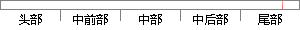

再通过不断的交流后，终于完成了OTunes应用的开发
片段位置图

相似结果|
相似片段 1：电子设计自动化的初步开发，在不断的实践中，终于实现了电子设计自动化技术的初步运用，随后在五年的时间中，电子设计自动化完成了重要的创新和改革，逐渐取得了重大的进步，在不断的发展中，电子设计自动化技术逐步被应用
相似片段 2：电子设计自动化的初步开发，在不断的实践中，终于实现了电子设计自动化技术的初步运用，随后在五年的时间中，电子设计自动化完成了重要的创新和改革，逐渐取得了重大的进步，在不断的发展中，电子设计自动化技术逐步被应用
|
※ 片段修改建议 ※
近似词参考：- 通过：经由过程
- 不断：不竭 不息 不休 接续 络续 赓续 不停
- 交流：交换
- 终于：终究
- 成了：成为了
- 应用：利用 运用
- 开发：开辟
系统自动生成语句：再经由过程不竭的交换后，终究完成为了OTunes利用的开辟
注：本片段修改建议为系统自动生成，仅供参考。